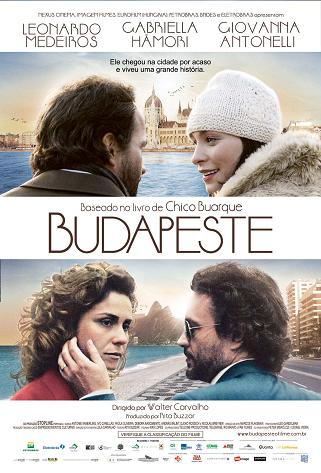
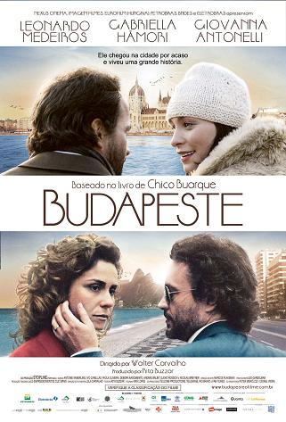

Budapeste é uma cidade dividida por um rio. De um lado, Buda. Do outro, Peste. É a maior cidade da Hungria e tem atraído diversos turistas para suas ruas que misturam história e diversão em todo canto. Conheci a cidade em 2019 e com certeza quero voltar. Destaques: cultura, história, arquitetura.
O vídeo a seguir, compartilhado do canal do Youtube da Michele Alves e replicado aqui, traz ótimas dicas de atrações e possibilidades pra quem tem interesse em conhecer mais sobre esse destino.
E, se você quiser mais imersão, aqui vão algumas dicas de livros e filmes que se passam em Budapeste:
1). Budapeste (2003): Budapeste é o terceiro romance de Chico Buarque. Foi adaptado ao cinema em 2009 com direção de Walter Carvalho.
2). O Grande Hotel Budapeste (2014): Ambientado em uma cidade fictícia localizada no leste europeu na década de 30. Para criar a ambientação, o designer de produção Adam Stockhausen criou uma maquete de 1,5 de altura, que possibilitou Wes Anderson a realizar tomadas amplas.
3). Budapeste (2009): Filme luso-húngaro-brasileiro dirigido por Walter Carvalho. O roteiro foi baseado no livro homônimo de Chico Buarque.
 
